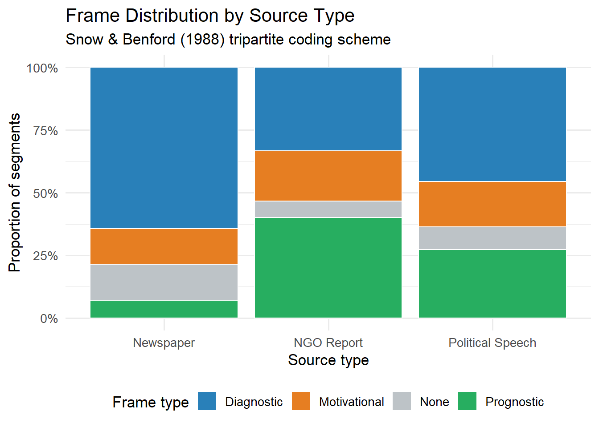

Week 1 Schemas, Frames, Scripts, and Cultural Logics
Weeks 5–6 | Theory + Lab 3: Frame Analysis & Text Coding
1.1 3.1 Disentangling the Concepts
These four constructs are frequently conflated in the literature. The distinctions matter because each carries different assumptions about the unit of analysis, the cognitive level, the temporal scale, and what counts as evidence.
library(tidyverse)
library(kableExtra)
concept_comparison <- tribble(
~concept, ~origin, ~definition, ~level, ~temporal, ~evidence_type,
"Schema", "Bartlett (1932);\nSewell (1992)",
"Organized cognitive structure that organizes perception and enables practice; transposable across contexts",
"Individual / trans-individual", "Durable", "Experimental; ethnographic; LCA proxy",
"Frame", "Goffman (1974);\nSnow & Benford (1988)",
"Definition of situation: what is happening, what role I play. Interactional and situational.",
"Interactional", "Situational", "Observation; discourse analysis; content coding",
"Script", "Schank & Abelson (1977)",
"Temporally ordered schema for routine event sequences (restaurant script, doctor visit)",
"Individual", "Situational", "Protocol analysis; scenario experiments",
"Cultural Logic", "Friedland & Alford (1991);\nThornton et al. (2012)",
"Field-level organizing principles (capitalism, religion, democracy); institutionalized and contradictory",
"Field / societal", "Historical", "Content analysis; comparative-historical; interview",
"Narrative", "Somers (1994);\nPolletta (2006)",
"Causal-temporal ordering of events into a story that gives action meaning and identity continuity",
"Individual to societal", "Variable", "Narrative interview analysis; corpus analysis"
)
concept_comparison %>%
kable(
col.names = c("Concept", "Origin", "Definition", "Level",
"Temporal", "Evidence Type"),
caption = "Table 3.1: Core cultural-cognitive constructs compared"
) %>%
kable_styling(bootstrap_options = c("striped", "hover"), font_size = 12) %>%
column_spec(3, width = "20em")| Concept | Origin | Definition | Level | Temporal | Evidence Type |
|---|---|---|---|---|---|
| Schema | Bartlett (1932); Sewell (1992) | |Organized cognitive structure that organizes perception and enables practice; transposable across contexts | |Individual / trans-individual | |Durable | |Experimental; ethnographic; LCA proxy |
| Frame | Goffman (1974); Snow & Benford (1988) | |Definition of situation: what is happening, what role I play. Interactional and situational. | |Interactional | |Situational | |Observation; discourse analysis; content coding |
| Script | Schank & Abelson (1977) | Temporally ordered schema for routine event sequences (restaurant script, doctor visit) | Individual | Situational | Protocol analysis; scenario experiments |
| Cultural Logic | Friedland & Alford (1991); Thornton et al. (2012) | |Field-level organizing principles (capitalism, religion, democracy); institutionalized and contradictory | |Field / societal | |Historical | |Content analysis; comparative-historical; interview |
| Narrative | Somers (1994); Polletta (2006) | |Causal-temporal ordering of events into a story that gives action meaning and identity continuity | |Individual to societal | |Variable | |Narrative interview analysis; corpus analysis |
1.2 3.2 Sewell’s Theory of Structure: Schemas and Resources
Sewell (1992) provides the most sociologically rigorous formulation of schema in the Anglophone tradition. His intervention: Giddens’ structuration theory is theoretically valuable but analytically unusable because structure is defined tautologically (as both medium and outcome). Sewell proposes:
Structure = schemas + resources
- Schemas: virtual — they exist as generative procedures, not material objects. Transposable: the same schema can be applied in multiple contexts. Polysemic: they can be given different interpretations.
- Resources: actual — material and human resources whose distribution empowers some actors relative to others.
The crucial claim: schemas and resources are mutually constitutive. Schemas give resources their value (money is worthless if no one applies the schema “this paper is money”); resources give schemas their power (the gender schema is effective partly because it is backed by differential resource distributions).
This formulation has direct implications for research design: measuring schemas alone, without attending to the resource distributions that empower them, produces incomplete accounts.
1.3 3.3 Goffman’s Frame Analysis
Frame analysis (Goffman, 1974) is a theory of the definition of situations. Frames are principles of organization that govern subjective involvement in social events. Goffman’s typology:
- Primary frameworks: basic interpretive schemes that make raw experience meaningful. Natural frameworks (no human agency) vs. social frameworks (intentional agents).
- Keys: transformations of primary frameworks (play, ceremony, technical re-do, deception, make-believe).
- Fabrications: deliberate framings designed to deceive.
Snow & Benford (1988) operationalize frames in social movements as:
- Diagnostic framing: identifies a problem and attributes blame
- Prognostic framing: proposes a solution
- Motivational framing: provides a rationale for participation
This tripartite scheme has generated a substantial quantitative content- analysis literature on social movement framing.
Frame vs. schema: a persistent conflation. Frames (Goffman) are situational — activated in interaction, governing what a situation is. Schemas (cognitive psychology / Sewell) are dispositional — stored knowledge structures that guide perception. They operate at different levels and on different timescales. Research that uses “frame” to mean “deep cultural orientation” is conflating the two.
1.4 3.4 Institutional Logics
Friedland & Alford (1991) identify capitalism, democracy, nuclear family, bureaucracy, and Christianity as central societal logics — each with its own organizing principle, material practices, and symbolic construction. These logics are:
- Contradictory: they make competing demands on actors and organizations
- Historically variable: their relative salience and content changes
- Operating at multiple levels: societal, field, organization, individual
Thornton, Ocasio & Lounsbury (2012) develop this into a full theoretical program. The inter-institutional system provides institutional orders (market, profession, corporation, family, community, religion, state), each with ideal-typical characteristics across multiple dimensions (root metaphor, organizing principle, basis of norms, etc.).
The multi-level problem in institutional logics research. Logics are theorized at the societal or field level but are often measured at the individual or organizational level. The assumption that field-level logics are “internalized” by individuals as schemas is a theoretical claim that requires empirical verification, not a methodological default. Studies that measure individual attitudes as proxies for institutional logics without testing the link are committing a cross-level inference error.
Recent work by Lounsbury & Boxenbaum (2013) and Ocasio, Thornton & Lounsbury (2017) takes this seriously, but the majority of empirical applications do not.
1.5 3.5 The Schema Measurement Problem: Three Strategies
Because schemas are pre-reflective, their measurement requires indirect strategies. Three approaches are in active use:
Strategy 1 — LCA as dispositional proxy (Vaisey, 2009) Use LCA on attitude batteries to identify latent moral types. Treat these as proxies for dispositional schemas. Validate by showing they predict behavior better than stated justifications. This is the dominant quantitative strategy (see Chapter 4 for full implementation).
Strategy 2 — Implicit/experimental measures Adapted from social psychology: - Implicit Association Tests (IAT): reaction-time measure of implicit associations (e.g., gender × career) - Semantic priming: does exposure to one concept activate another, measured by reaction time? - Vignette experiments: present scenarios and measure judgments. Reduces post-hoc rationalization.
Strategy 3 — Observational/ethnographic If schemas manifest in practice (Bourdieu, Sewell), then sustained observation of practice is the most valid access point. The limitation is generalizability and the difficulty of formal inference.
1.6 Lab 3: Content Analysis and Frame Coding
This lab introduces systematic content analysis as a method for identifying frames in text. We use a small corpus of media texts on a contested social issue and code them for diagnostic, prognostic, and motivational framing (Snow & Benford, 1988). We then analyze inter-rater reliability formally (Cohen’s kappa) and examine frame distributions across sources.
1.6.1 3.5.1 Building a Codebook
# A codebook is a formal operationalization of theoretical concepts.
# Below is a minimal codebook for Snow & Benford's three framing types,
# including coding rules and anchor examples.
codebook <- tribble(
~frame_type, ~definition, ~positive_anchor, ~negative_anchor,
"Diagnostic", "Identifies a problem; attributes causation or blame to a specific agent or condition",
"'Rising inequality is the result of tax policy that systematically favors capital'",
"'Things aren't great but it's complicated' (no clear blame attribution)",
"Prognostic", "Proposes a concrete solution or course of action",
"'Expanding the EITC and strengthening collective bargaining rights would address this'",
"'Something must change' (exhortation without specific proposal)",
"Motivational", "Provides rationale for action; addresses why one should care or act",
"'If we don't act now, the next generation will inherit a society more unequal than the Gilded Age'",
"'Inequality is bad' (evaluative without action implication)"
)
codebook %>%
kable(
col.names = c("Frame Type", "Definition", "Positive Anchor", "Negative Anchor"),
caption = "Table 3.2: Snow & Benford (1988) framing codebook"
) %>%
kable_styling(bootstrap_options = "striped", font_size = 12) %>%
column_spec(2:4, width = "18em")| Frame Type | Definition | Positive Anchor | Negative Anchor |
|---|---|---|---|
| Diagnostic | Identifies a problem; attributes causation or blame to a specific agent or condition | ‘Rising inequality is the result of tax policy that systematically favors capital’ | ‘Things aren’t great but it’s complicated’ (no clear blame attribution) |
| Prognostic | Proposes a concrete solution or course of action | ‘Expanding the EITC and strengthening collective bargaining rights would address this’ | ‘Something must change’ (exhortation without specific proposal) |
| Motivational | Provides rationale for action; addresses why one should care or act | ‘If we don’t act now, the next generation will inherit a society more unequal than the Gilded Age’ | ‘Inequality is bad’ (evaluative without action implication) |
1.6.2 3.5.2 Simulated Coding Exercise
set.seed(20240103)
# Simulate a coding exercise:
# 40 text segments from 3 source types (newspaper, NGO report, political speech)
# Two coders independently apply the codebook
# We compute inter-rater reliability
n_segments <- 40
segments <- tibble(
segment_id = 1:n_segments,
source_type = sample(c("Newspaper", "NGO Report", "Political Speech"),
n_segments, replace = TRUE, prob = c(0.4, 0.3, 0.3)),
# True underlying frame (latent — in real research, this is unknown)
true_frame = sample(c("Diagnostic", "Prognostic", "Motivational", "None"),
n_segments, replace = TRUE, prob = c(0.35, 0.30, 0.20, 0.15))
)
# Simulate two coders with ~80% agreement (realistic for trained coders)
# Error rate differs slightly by frame type (Motivational hardest to code)
recode_with_noise <- function(true_frame, noise_prob = 0.12) {
frame_options <- c("Diagnostic", "Prognostic", "Motivational", "None")
sapply(true_frame, function(f) {
if (runif(1) < noise_prob) {
sample(frame_options[frame_options != f], 1)
} else {
f
}
})
}
segments <- segments %>%
mutate(
coder_a = recode_with_noise(true_frame, noise_prob = 0.12),
coder_b = recode_with_noise(true_frame, noise_prob = 0.15)
)
head(segments, 8)## # A tibble: 8 × 5
## segment_id source_type true_frame coder_a coder_b
## <int> <chr> <chr> <chr> <chr>
## 1 1 NGO Report Motivational Motivational Motivational
## 2 2 Political Speech Diagnostic Diagnostic Diagnostic
## 3 3 Political Speech Motivational Motivational Motivational
## 4 4 Newspaper Diagnostic Diagnostic Diagnostic
## 5 5 NGO Report Prognostic Prognostic Prognostic
## 6 6 Newspaper Diagnostic Diagnostic Diagnostic
## 7 7 NGO Report Diagnostic Diagnostic Diagnostic
## 8 8 NGO Report Prognostic Prognostic Prognostic# Compute Cohen's kappa for inter-rater reliability
# kappa corrects for chance agreement; > 0.60 is acceptable,
# > 0.80 is strong agreement for social science content analysis
# Manual kappa computation
kappa_manual <- function(rater_a, rater_b) {
levels_all <- union(unique(rater_a), unique(rater_b))
n <- length(rater_a)
# Observed agreement
Po <- mean(rater_a == rater_b)
# Expected agreement by chance
Pe <- sum(sapply(levels_all, function(cat) {
(sum(rater_a == cat) / n) * (sum(rater_b == cat) / n)
}))
kappa <- (Po - Pe) / (1 - Pe)
list(
observed_agreement = round(Po, 3),
expected_agreement = round(Pe, 3),
kappa = round(kappa, 3)
)
}
kappa_overall <- kappa_manual(segments$coder_a, segments$coder_b)
cat("Inter-Rater Reliability (Cohen's Kappa)\n")## Inter-Rater Reliability (Cohen's Kappa)## ─────────────────────────────────────────## Observed agreement: 0.875## Expected agreement: 0.334## Cohen's kappa: 0.812##
## Interpretation (Landis & Koch, 1977):## < 0.20: Slight | 0.21-0.40: Fair | 0.41-0.60: Moderate## 0.61-0.80: Substantial | > 0.80: Almost perfect1.6.3 3.5.3 Frame Distribution by Source Type
# Use resolved codes (majority or Coder A after discussion)
# Here we use true_frame as the resolved code for illustration
frame_dist <- segments %>%
count(source_type, true_frame) %>%
group_by(source_type) %>%
mutate(pct = n / sum(n))
ggplot(frame_dist, aes(x = source_type, y = pct, fill = true_frame)) +
geom_col(position = "fill", color = "white", linewidth = 0.4) +
scale_y_continuous(labels = scales::percent_format()) +
scale_fill_manual(
values = c("Diagnostic" = "#2980b9",
"Prognostic" = "#27ae60",
"Motivational" = "#e67e22",
"None" = "#bdc3c7"),
name = "Frame type"
) +
labs(
title = "Frame Distribution by Source Type",
subtitle = "Snow & Benford (1988) tripartite coding scheme",
x = "Source type",
y = "Proportion of segments"
) +
theme_minimal(base_size = 13) +
theme(legend.position = "bottom")
Figure 1.1: Figure 3.1: Distribution of frames by source type. NGO reports show higher prognostic framing; political speeches are heaviest on motivational framing. Note that these patterns reflect simulated data designed to illustrate a realistic pattern.
1.6.4 3.5.4 Chi-square Test of Frame × Source Independence
# Is the frame distribution statistically independent of source type?
frame_table <- table(segments$source_type, segments$true_frame)
chi_result <- chisq.test(frame_table)## Warning in chisq.test(frame_table): Chi-squared approximation may be incorrect## Chi-square test: Frame × Source Type## ─────────────────────────────────────## X² = 5.204## df = 6## p = 0.5179##
## Note: With N=40, power is limited. In real research,## this test requires adequate cell counts (expected > 5).##
## Diagnostic Motivational None Prognostic
## Newspaper 9 2 2 1
## NGO Report 5 3 1 6
## Political Speech 5 2 1 3Core Readings
- Sewell, W. H. (1992). A Theory of Structure: Duality, Agency, and Transformation. American Journal of Sociology, 98(1), 1–29.
- Goffman, E. (1974). Frame Analysis: An Essay on the Organization of Experience. Harvard University Press. Chapters 1–2.
- Snow, D. A., & Benford, R. D. (1988). Ideology, Frame Resonance, and Participant Mobilization. International Social Movement Research, 1, 197–217.
- Friedland, R., & Alford, R. R. (1991). Bringing Society Back In. In W. W. Powell & P. DiMaggio (Eds.), The New Institutionalism in Organizational Analysis. University of Chicago Press.
- Thornton, P. H., Ocasio, W., & Lounsbury, M. (2012). The Institutional Logics Perspective. Oxford University Press. Chapters 1–3.
- Somers, M. R. (1994). The Narrative Constitution of Identity. Theory and Society, 23(5), 605–649.
- Lizardo, O. (2017). Improving Cultural Analysis. American Sociological Review, 82(1), 88–115.
## R version 4.5.3 (2026-03-11 ucrt)
## Platform: x86_64-w64-mingw32/x64
## Running under: Windows 11 x64 (build 26200)
##
## Matrix products: default
## LAPACK version 3.12.1
##
## locale:
## [1] LC_COLLATE=English_Israel.utf8 LC_CTYPE=English_Israel.utf8
## [3] LC_MONETARY=English_Israel.utf8 LC_NUMERIC=C
## [5] LC_TIME=English_Israel.utf8
##
## time zone: Asia/Jerusalem
## tzcode source: internal
##
## attached base packages:
## [1] stats graphics grDevices utils datasets methods base
##
## other attached packages:
## [1] patchwork_1.3.2 factoextra_2.0.0 FactoMineR_2.13 ggrepel_0.9.8
## [5] kableExtra_1.4.0 lubridate_1.9.5 forcats_1.0.1 stringr_1.6.0
## [9] dplyr_1.2.0 purrr_1.2.1 readr_2.2.0 tidyr_1.3.2
## [13] tibble_3.3.1 ggplot2_4.0.2 tidyverse_2.0.0 rmarkdown_2.31
##
## loaded via a namespace (and not attached):
## [1] tidyselect_1.2.1 viridisLite_0.4.3 farver_2.1.2
## [4] S7_0.2.1 fastmap_1.2.0 TH.data_1.1-5
## [7] promises_1.5.0 digest_0.6.39 estimability_1.5.1
## [10] timechange_0.4.0 mime_0.13 lifecycle_1.0.5
## [13] cluster_2.1.8.2 multcompView_0.1-11 survival_3.8-6
## [16] magrittr_2.0.4 compiler_4.5.3 rlang_1.1.7
## [19] sass_0.4.10 tools_4.5.3 utf8_1.2.6
## [22] yaml_2.3.12 knitr_1.51 ggsignif_0.6.4
## [25] labeling_0.4.3 htmlwidgets_1.6.4 scatterplot3d_0.3-45
## [28] xml2_1.5.2 RColorBrewer_1.1-3 abind_1.4-8
## [31] multcomp_1.4-30 miniUI_0.1.2 withr_3.0.2
## [34] grid_4.5.3 ggpubr_0.6.3 xtable_1.8-8
## [37] ClaudeR_0.2.0 emmeans_2.0.2 scales_1.4.0
## [40] MASS_7.3-65 flashClust_1.1-4 cli_3.6.5
## [43] mvtnorm_1.3-6 generics_0.1.4 otel_0.2.0
## [46] rstudioapi_0.18.0 tzdb_0.5.0 cachem_1.1.0
## [49] splines_4.5.3 base64enc_0.1-6 vctrs_0.7.2
## [52] Matrix_1.7-4 sandwich_3.1-1 carData_3.0-6
## [55] jsonlite_2.0.0 car_3.1-5 bookdown_0.46
## [58] hms_1.1.4 rstatix_0.7.3 Formula_1.2-5
## [61] systemfonts_1.3.2 jquerylib_0.1.4 glue_1.8.0
## [64] codetools_0.2-20 DT_0.34.0 stringi_1.8.7
## [67] gtable_0.3.6 later_1.4.8 pillar_1.11.1
## [70] htmltools_0.5.9 R6_2.6.1 textshaping_1.0.5
## [73] evaluate_1.0.5 shiny_1.13.0 lattice_0.22-9
## [76] backports_1.5.0 leaps_3.2 broom_1.0.12
## [79] httpuv_1.6.17 bslib_0.10.0 Rcpp_1.1.1
## [82] svglite_2.2.2 coda_0.19-4.1 xfun_0.57
## [85] zoo_1.8-15 pkgconfig_2.0.3